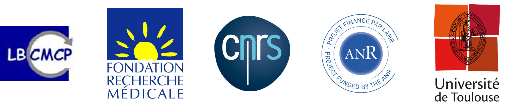

Dynamique des Chromosomes durant la Mitose chez la Levure à Fission
Hadrien Mary
(sous la direction de Sylvie Tournier et Yannick Gachet)
le 16 décembre 2015
Introduction
La mitose
« Le rêve de chaque cellule est de devenir deux cellules. » (François Jacob, 1974)
Haemanthus katherinae cell, Bajer, 1956 (time x300)
La mitose
Le kinétochore
Les microtubules
L'attachement entre le kinétochore et les microtubules
cellule PtK1, Cimini, 2004
L'attachement : le complexe NDC80
L'attachement : le complexe DAM1
Les kinésines
La kinésine 8
La kinésine 8 :
- est très processive
- possède une activité dépendante de la longueur du microtubule
Le fuseau mitotique
Le fuseau mitotique : la midzone
La métaphase : point d'orgue de la division cellulaire
cellule PtK1, Cimini, 2004
cellule HeLa, Stumpff, 2008
La modélisation en biologie
Modélisation mathématique de la ségrégation des chromosomes : la théorie
Gay, 2012
Modélisation mathématique de la ségrégation des chromosomes : la pratique
Gay, 2012
Modélisation mathématique de la ségrégation des chromosomes : la pratique
Un modèle biologique idéal : Schizosaccharomyces pombe
Résultats
Mouvement des chromosomes en métaphase
Mouvement des chromosomes en métaphase sans la kinésine-8
La kinésine-8 permet le centrage des chromosomes
- La kinésine-8 est requise pour l'alignement des chromosomes en métaphase.
- L'amplitude des oscillations est plus grande chez des cellules kinésine-8Δ.
Une drogue déstabilisatrice des microtubule perturbe les oscillations mais pas l'alignement
Preuve génétique que les oscillations ne sont pas requises pour l'alignement : le mutant dam1Δ
Les oscillations ne sont pas requises pour le centrage des chromosomes
Un déséquilibre des forces de tractions pourrait expliquer l'augmentation de l'amplitude des oscillations
La kinésine-8 s'accumule à l'extrémité plus des MTs en fonction de leur longueur
Modèle mécanique de la ségrégation des chromosomes
Une activité dépendante de la longueur reproduit les effets de la kinésine-8
Une activité dépendante de la longueur reproduit les effets de la kinésine-8
Analyse des trajectoires in vivo par la mesure du déplacement quadratique moyen (MSD)
Analyse des trajectoires in vivo par MSD
Analyse des trajectoires in vivo par MSD (log-log)
Analyse des trajectoires in vivo par MSD (log-log + fit)
Discussion
La congression des chromosomes
discuter des résultats de stumpff
Contrôle de la dynamique des chromosomes en mitose
- resultats harry
- msd
Le mouvement des chromosomes est-il un processus régulier ?
Le mouvement des chromosomes est-il un processus régulier ?
Vers un modèle global de la mitose
- Passage en trois dimensions.
- Ségrégation des chromosomes chez C. elegans.
- Modélisation de l'orientation du fuseau mitotique dans la cellule.
- En collaboration avec Guillaume Gay (damcb.com) et Jacques Pécreaux (Rennes).
Remerciement
Equipe Tournier-Gachet (LBCMCP)
- Céline Reyes
- Tong Li
- Simon Cabello
- Yannick Gachet
- Sylvie Tournier
Autres
- Guillaume Gay (damcb.com)
- Jonathan Fouchard (co-premier auteur de Mary et al., JCS, 2015)
- Tiphaine Gautier
- Clémence Gruget
- Thomas Mangeat

Ce travail de thèse a été soutenu par ANR Blanc 1206 01 "Chromocatch" et FRM (ING 2012 1226 280) "innovative project".